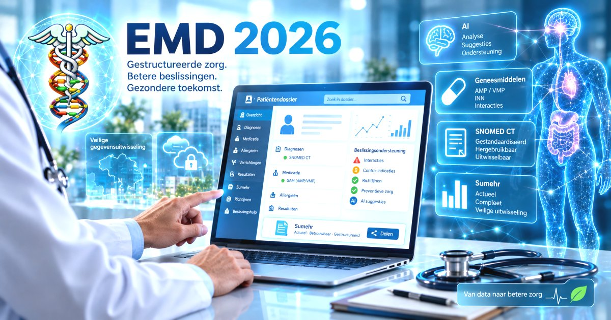

De kwaliteit van een EMD wordt anno 2026 niet zozeer bepaald door de mogelijkheid om informatie elektronisch op te slaan maar door de mate waarin die informatie gestructureerd, semantisch eenduidig en herbruikbaar is.
De arts registreert in vrije tekst of via dictatie, waarna het EMD de informatie automatisch kan vertalen naar gestructureerde en aan SNOMED CT gekoppelde gegevens.
De gestandaardiseerde gegevens kunnen vervolgens worden hergebruikt
Via de SAM-koppeling moet het EMD elk voorgeschreven geneesmiddel eenduidig kunnen identificeren en via AMP/VMP kunnen herleiden tot de onderliggende werkzame stof INN.
Zo kunnen verschillende merken, generieken en verpakkingen
Een modern EMD moet patiëntgegevens niet alleen registreren maar ze ook actief gebruiken voor klinische beslissingsondersteuning.
Op basis van gestructureerde en gestandaardiseerde gegevens moet het EMD onder meer kunnen waarschuwen voor en wijzen op:
Kunstmatige intelligentie (AI) kan hierop voortbouwen maar de meerwaarde van AI staat of valt met de kwaliteit, volledigheid en semantische eenduidigheid van de gegevens waarop zij werkt.
AI kan vervolgens grote hoeveelheden informatie uit het dossier analyseren, verbanden leggen tussen klachten, diagnosen, medicatie en onderzoeksresultaten en de arts gericht attenderen op mogelijke diagnosen en differentieel diagnosen, relevante risico's of ontbrekende informatie.
Daarmee kan het EMD evolueren van een systeem dat informatie registreert naar een systeem dat de arts actief helpt om informatie te interpreteren en beslissingen te ondersteunen.
Een dergelijke beslissingsondersteuning moet transparant, controleerbaar en ondersteunend blijven. De arts moet kunnen zien op welke patiëntgegevens, geneesmiddeleninformatie, richtlijn of andere bron een waarschuwing of aanbeveling gebaseerd is.
Een Sumehr moet automatisch en actueel worden gegenereerd uit de gestructureerde gegevens van het EMD zoals diagnosen, medicatie, allergieën en relevante antecedenten.
De kwaliteit van het samengevat elektronisch gezondheidsdossier staat of valt met de bronregistratie.
De gestructureerde registratie via SNOMED CT en via de gestandaardiseerde geneesmiddelenstructuur - ondersteund door beslissingshulp, AI en automatische controles - vormt de basis voor een betrouwbare, actuele en machineleesbare Sumehr.
Zonder goede bronregistratie, geen goede Sumehr.
Het EMD zou deze uiteenlopende medische gegevensstromen uit externe databanken en systemen in één medisch dossier moeten kunnen samenbrengen en integreren.
FHIR wordt internationaal steeds meer de standaard voor elektronische gegevensuitwisseling.
Er bestaat geen afzonderlijke officiële Vlaamse lijst van EMD-pakketten. De federale overheid registreert en beoordeelt software via het eHealth-platform en het RIZIV publiceert een lijst van softwarepakketten die door de Nationale commissie artsen-ziekenfondsen zijn aanvaard. De actuele RIZIV-lijst bevat negen pakketten.
Na ongeveer 35 jaar medische informatica beschikken we nog altijd niet over het EMD waarvan men redelijkerwijs zou mogen verwachten dat het de huisarts optimaal ondersteunt in zijn medische informatieverwerking. De vraag is niet meer hoeveel functies en AI we nog aan het bestaande EMD kunnen toevoegen maar of we het ons in 2026 nog kunnen veroorloven om een EMD-architectuur uit een vorige generatie software als uitgangspunt te blijven nemen.
De grootste kans van AI in de medische informatica ligt niet in het toevoegen van een AI-functie aan het bestaande EMD. De echte kans ligt erin een nieuw soort EMD door AI te laten ontwerpen. Vanuit een moderne, modulaire en API-first architectuur, met een gestructureerde medische informatiekern als fundament.
De ontwikkeling van artificiële intelligentie maakt die vraag bijzonder actueel. AI-systemen kunnen vandaag al grote hoeveelheden softwarecode genereren, bestaande code analyseren, tests schrijven, fouten opsporen en complexe programmeertaken uitvoeren.
Als AI binnenkort een groot deel van de feitelijke softwareontwikkeling kan uitvoeren, waarom zouden we dan nog vertrekken van een EMD-architectuur uit de vorige generatie software ?
